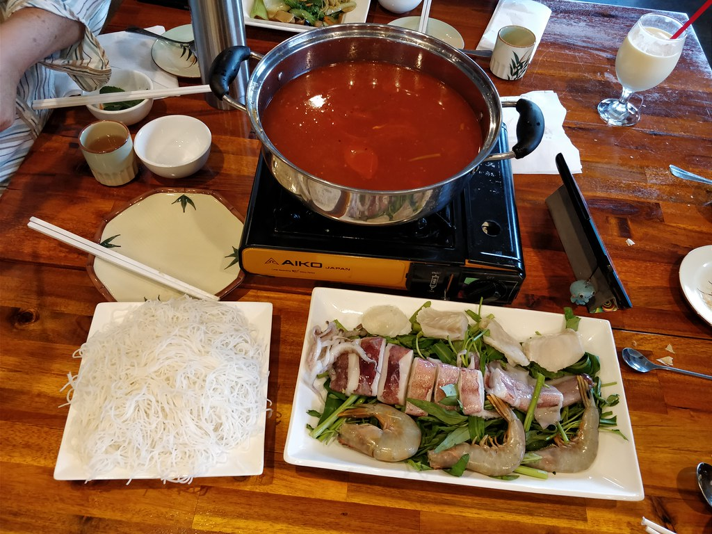

01 / MIỀN TÂY
Chạm để xem nguyên liệu
Chuẩn bị cho nồi lẩu
Nguyên liệu chính
Tôm, mực và cá tươi
Cà chua, hành tím, đậu hũ
Riêu cua hoặc chả cá
Bún tươi và rau ăn lẩu
Chạm để xem ảnh
Ảnh: avlxyz · CC BY-NC 2.0
Lẩu riêu hải sản
Nóng hổi vị sông nước